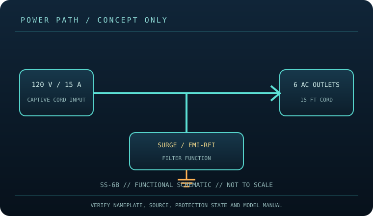

[ SURGE PROTECTIVE DEVICE // STATIC REFERENCE ]
Furman SS-6B Pro Series
Six grounded outlets, 15 A / 120 V service, 15 ft cord, steel case and resettable breaker; manufacturer does not state a joule figure in the cited listing. This record describes the named model only; verify nameplate, region, revision, approvals and current manufacturer instructions before deployment.

SAFETY SCOPE: Surge protective devices do not provide outage runtime, guarantee protection from every event, repair defective grounding, or replace qualified electrical installation. Capacity and topology below are based on the cited product literature; where a value is not published, it is not guessed.
Model specifications and topology
| Manufacturer / exact model | Furman SS-6B — named North American model; revisions and region-specific suffixes must be checked on the actual label. |
|---|---|
| Class / topology | Cord-connected six-outlet power block with surge/spike suppression and EMI/RFI filtering, not a battery UPS. Manufacturer materials do not disclose a circuit-level suppression topology; this diagram is functional only. |
| Electrical capacity | 120 V AC nominal, 15 A maximum branch/load rating; captive 15 ft cord, six grounded AC outlets, and a resettable circuit breaker per Furman product literature. The exact unit nameplate governs. |
| Surge rating | The manufacturer identifies a 15 A current rating and spike/surge suppression, but the cited model literature does not publish a joule-energy figure. No joule value is estimated or implied in this record. |
| Outlets / connection interface | Six grounded North American AC receptacles share one 15 A supply; 15 ft captive cord and illuminated master switch with resettable breaker. No USB charging, battery, network telemetry, or signal-line ports are listed for this model. |
| Compatibility | For compatible grounded 120 V AC equipment whose combined current does not exceed 15 A or the upstream circuit limit. Suitable applications depend on the connected load and manufacturer instructions; this unit cannot regulate supply voltage or provide backup runtime. |
| Battery / runtime | No battery or stored-energy runtime. This product cannot ride through an outage; connected loads lose power when the source or device disconnects. |
| Monitoring / lifecycle | Use only the model’s labeled indicators, alarm, breaker or status display. These features are not proof of building-ground integrity; check manufacturer replacement/failure instructions. |
| Installation / revision control | Read the full model-specific manual and nameplate before installation. Match voltage, phase, current, connector, signal-line type, enclosure rating, revision and approvals; similar product-family names are not evidence of interchangeability. |
Compatibility and application
For compatible grounded 120 V AC equipment whose combined current does not exceed 15 A or the upstream circuit limit. Suitable applications depend on the connected load and manufacturer instructions; this unit cannot regulate supply voltage or provide backup runtime.
Cord-connected six-outlet power block with surge/spike suppression and EMI/RFI filtering, not a battery UPS. Manufacturer materials do not disclose a circuit-level suppression topology; this diagram is functional only.
Confirm the equipment input-voltage range, connector type, circuit capacity and signal path from both equipment manuals. A higher joule number does not increase the permissible connected load and does not, by itself, define clamping behavior or protection lifetime.
Safety, inspection and limits
- Do not use the block with wet or damaged equipment, remove the grounding pin, overload the circuit, or daisy-chain it with another strip. Keep ventilation clear and follow the instructions for breaker trips; repeated trips indicate a fault or overload requiring investigation, not repeated resetting.
- Before use inspect cord, plug, outlet body and switch. Unplug before cleaning; never open energized equipment. A surge strip is sacrificial/finite protection equipment in use even when no joule number is stated; replace a damaged, overheated or failed unit and follow Furman guidance.
- Surge protection reduces specified transient exposure but cannot guarantee equipment survival from lightning, wiring faults, sustained overvoltage or every conducted path. Follow the model manual and applicable electrical code.
Manufacturer sources and safety references
- Furman — SS-6B product pageManufacturer listing for the six-outlet block, current rating, cord and suppression/filtering features.
- Furman — SS-6B safety and warranty information (PDF)Model-specific safety, warranty and operating information.
- NFPA — NFPA 70 (National Electrical Code)Electrical installation and grounding requirements depend on the adopted local code.